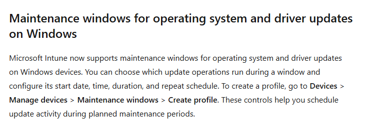
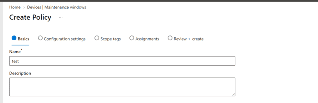
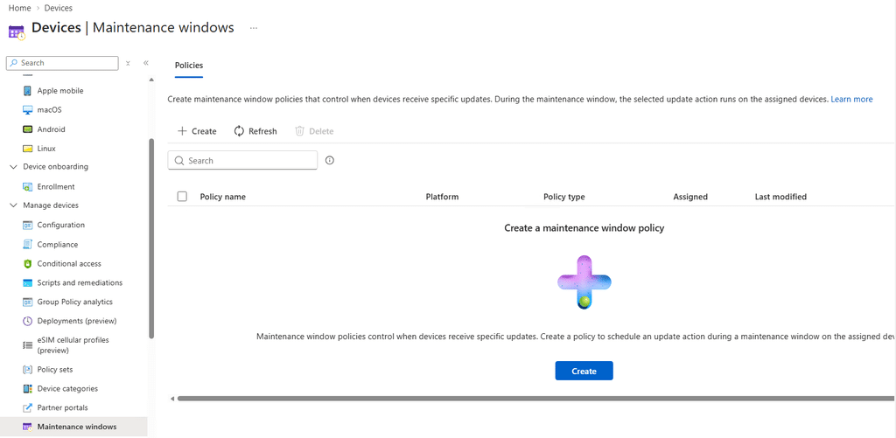
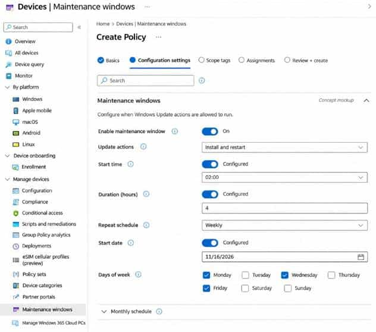

Microsoft has announced Maintenance Windows for Windows operating system and driver updates in Intune’s What’s new.


Here is what the Maintenance Window feature does, how to create a policy, and what the settings could look like based on Microsoft’s documentation.
Maintenance Windows are back in Intune
I was reading the Intune What’s new notes for the week of November 16, 2026, and one announcement caught my eye: Maintenance windows for operating system and driver updates on Windows.
Microsoft now lets us choose which automatic Windows Update actions should wait for a maintenance window. We can also set when that window starts, how long it lasts, and whether it repeats. This gives us a new way to plan update activity around the hours when a device needs to be available.

For devices that need to stay available during the day, this can make a real difference. Think of shared PCs, kiosks or production devices. Windows can download updates when they are available, but installations and restarts can wait for a planned maintenance period.
Microsoft has published a separate configuration guide alongside the announcement. It explains the policy options and schedules, so let’s look at how Maintenance Windows actually work and how you would configure one in Intune.
I covered the earlier Maintenance Window story in Maintenance Window Settings for OS, Drivers, and Updates and Maintenance Window Settings Catalog… And It’s Gone.
This is not the same as Active Hours
As mentioned before, Active Hours help Windows avoid disruptive restarts when people normally use their devices. Maintenance Windows work the other way around. You specify when selected automatic Windows Update actions are allowed to begin.
For example, a shared device might be used all day but be available for servicing overnight. You might allow downloads at any time, while installations and restarts are restricted to a window between 02:00 and 06:00.
Microsoft says the policy covers Windows Update content such as quality updates, feature updates, Hotpatch updates, .NET updates, drivers, and firmware. It does not decide which updates the device receives. Your existing update policies still control that.
Three options, with very different results
The update action determines what Windows must wait for. Microsoft documents three choices:
| Update action | What can happen outside the window |
| Download, install and restart | None of these automatic actions, unless another policy or event takes priority. |
| Install and restart | Updates can still download outside the window. |
| Restart only | Downloads and installations can happen outside the window. |
An important detail: the action only needs to begin inside the window. If Windows starts installing something just before the window closes, it can continue afterward. The window is not a hard stop at 06:00.
Creating a Maintenance Windows policy in Intune
Microsoft’s announcement points to Devices > Manage devices > Maintenance windows. That is where the new policy type belongs. The screenshot below shows the Maintenance windows page and its Create option.


Please note: This is a mock-up based on how it’s described in the “What’s new in Intune”
Selecting Create opens the familiar Intune policy wizard, with Basics, Configuration settings, Scope tags, Assignments and Review + create. Start by giving the policy a name and an optional description.

What Maintenance Window settings belong in the policy?
A Maintenance Windows policy brings several Windows Update settings together in one place. Instead of dealing with separate controls for start time, duration, weekday selection, and monthly schedules, the policy wizard guides you through the options.
A new dedicated policy template (ID: 376dba80-ed56-46a7-9975-a655e95ff24c) brings those Windows settings into one Intune policy. That makes it easier to create and assign a maintenance window without configuring every setting individually.
According to Microsoft’s guide, Configuration settings include Workload type set to Updates, Enable Maintenance windows set to On, the Update action you want to control, and the schedule. After that, you can set scope tags, assign the policy to device groups, and finish with Review + create.
You can use a one-time window or a daily, weekly, or monthly schedule. With a weekly schedule, you choose the days. Monthly schedules can use a specific day from the 1st through the 28th, or something like the second Tuesday of the month. The duration can be 2 to 24 hours, and Windows uses each device’s local time. A start date is required in the admin center.
So, what could the Maintenance Window settings page look like?
Based on the settings described in Microsoft’s documentation, I put together the concept below. It shows a weekly window on Monday, Wednesday, and Friday, starting at 02:00 and lasting four hours. The selected action is Install and restart. This is a mockup of a possible layout, not a confirmed screenshot of the final Configuration settings page.


| CONCEPT MOCKUP, NOT FINAL MICROSOFT UI Microsoft’s guide includes a Workload type option and specifies the order of the schedule settings. The layout, labels and grouping shown here are an illustration based on those documented settings. The final Intune page may look different. |
What would this example actually do?
With those settings, Windows could download updates throughout the day. On Monday, Wednesday, and Friday, automatic installation and update-related restarts would be allowed to begin between 02:00 and 06:00, using each device’s local time.
That does not mean every device starts installing at 02:00 or finishes restarting before 06:00. The update needs to be available, the device needs to be online, and Windows must be ready to perform the action. Work that starts inside the window may finish later.
A few things to remember before rolling this out
Maintenance Windows are not an absolute block on update activity. Microsoft documents situations that can take priority, including expedited quality updates, expired deadlines and grace periods, required actions during device provisioning and certain other update events. Users may also start update actions outside the window when Windows and the other applicable policies allow it.
Deferrals still matter. If a deferral prevents Windows from offering an update, the maintenance window cannot make it available. Once the update becomes available, a later window may be the first opportunity for the selected actions to begin.
There is also a minimum Windows requirement. Microsoft currently documents support starting with Windows 11, version 24H2 with KB5077181 and build 26100.7840, or later. I would check that first when testing the new policy.
How can you tell whether it worked?
Start with a small group of test devices. From the policy in Intune, check Device and user check-in status, Device assignment status, and Per-setting status. During a gradual service rollout, the exact portal experience may vary between tenants.
These reports tell you whether the policy reached the device. They do not prove an update was installed or that a restart actually happened in the scheduled period. For that, compare Windows Update or Autopatch reporting with the maintenance window and the device’s local time.
So, are Maintenance Windows back?
Yes. Microsoft’s November 16 What’s new announcement introduces Maintenance Windows for operating system and driver updates in Intune, and the configuration guide explains how to create the policy. We can now plan when selected automatic update actions are allowed to start, instead of relying on Active Hours alone.
For shared devices, kiosks, and other systems with busy working hours, that extra control can be useful. Just remember that a maintenance window does not guarantee everything finishes before the window ends, and some update rules can take priority. The Configuration settings image above is our concept based on Microsoft’s documentation, so its final appearance may differ.
Sources: Intune What’s new | Configure maintenance windows | Windows Update CSP